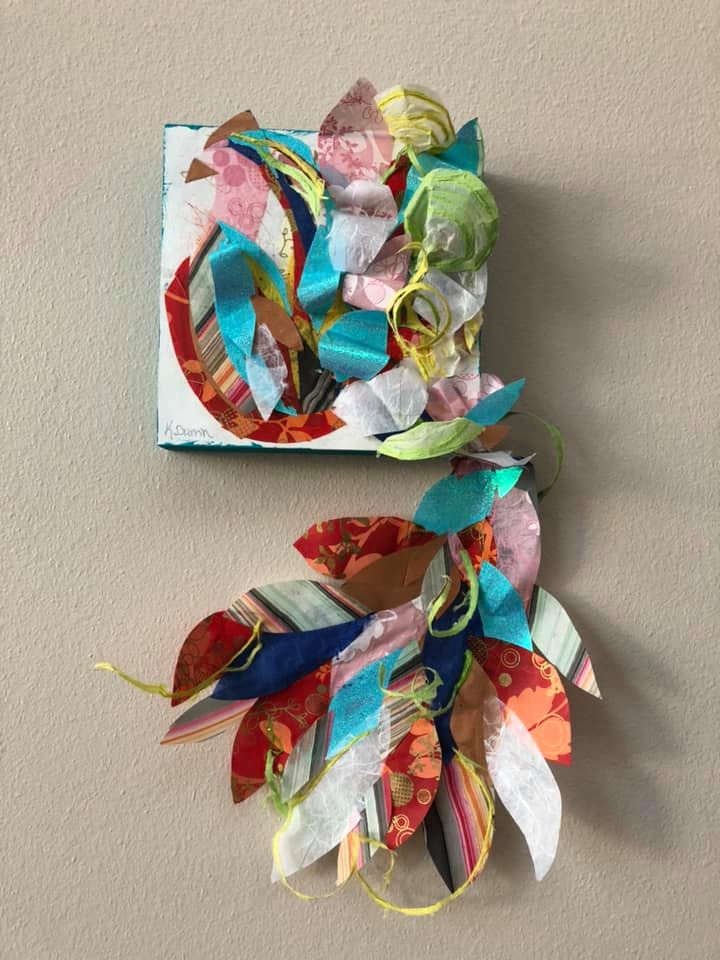

Karah grew up in Missoula, Montana, leaveing a couple diffrent times she always seemed to make it back home. Where she met her husband of 13 years, they have a 10 year old daughter, a german sheppard, and 3 cats.
Karah is a senior at the University of Montana, she is getting her BA in Studio Art. She found her passion for art when she took a drawing class for the credit. By the end of that semester she had changed her major. Once she graduates she hopes to find her place in the local art community.
She finds her art to be theraputic for herself and is able to escape reaility for a little bit while she paints. She hopes her art inspires others to follow their passions.
